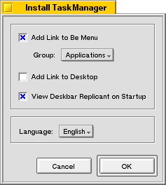

| Be TaskManager Documentation |
Double click the archive file. The typical BeOS installation wizard will guide you through the rest of the process.
After the installation this dialog pops up:
In this dialog you can select you preferred language and create links to Be TaskManager on the desktop and in the Be menu. If you choose to create a link in the Be menu you can select the group in which the link is created by the "Group" drop down box. The "View Deskbar Replicant at Startup" setting causes the deskbar replicant to be shown by default.
BeTaskManager in the latest release includes a plugin (addon) for the LM78 motherboard sensor. If your motherboard is equipped with this sensor chip you can add the current motherboard temperature and fan speeds to the performance view. This plugin is available for the x86 version only.
This plugin depends on the LM78 driver with is part of the Sensor2 distribution. If that driver isn't installed, the options to add the sensor data to the performance view isn't available.
To use the sensor plugin follow the following steps:
If you start BeTaskManager now, you will have the following options in the "Add" dialog of the performance view:
NOTE: The motherboard sensor driver can only be used by one program at a time. If the driver is already in use by another program a warning dialog is displayed. Until the driver is released by the other program the above counters will always be zero.